Etapa 7: Relatório Final do Trabalho (RFT)
INTEGRANTES:
Igor Domingos da Silva Mozetic - 11202320802
Jhonattan Ferreira Machado - 11202320245
Mikael Alves Monteiro - 21055813
Data de Realização do trabalho: 13/08/2025
Data de Publicação do trabalho: 18/08/2025
Tema: Sistema de Contagem de Moedas Brasileiras com Visão Computacional
INTRODUÇÃO
Cenário de Aplicação (CA)
PROBLEMA, CONTEXTO E JUSTIFICATIVA
Com a popularização de métodos digitais de pagamento, muitos profissionais autônomos e idosos ainda operam exclusivamente com dinheiro físico por falta de acesso ou familiaridade com tecnologia. A entrevista realizada com uma costureira de 73 anos revelou um cenário recorrente entre trabalhadores informais: a dificuldade de conferir e validar pagamentos em moedas, recebidos em pequenas quantias por serviços diários.
No caso da entrevistada, a baixa escolaridade e a idade avançada dificultam a realização de operações matemáticas simples, como somar o valor total recebido em moedas. Além disso, a semelhança visual entre diferentes tipos de moedas (5 centavos e 50 centavos) causa confusão, especialmente em ambientes com iluminação precária. Essa limitação a leva a depender de outras pessoas para verificar o pagamento — o que compromete sua autonomia — e já ocasionou perdas financeiras por falhas na conferência que só foram percebidas muito tempo depois.
Situações como essa se repetem em diversos lares e comércios pequenos, onde o atendimento é feito de forma simples, rápida e muitas vezes sem recursos adequados de controle. Ainda que existam balanças de precisão e caixas registradoras eletrônicas, esses dispositivos são inacessíveis financeiramente ou complexos demais para o público-alvo em questão. Portanto, há uma lacuna evidente para soluções de baixo custo e fácil utilização que empreguem tecnologia visual simples para resolver um problema cotidiano real.
Neste contexto, o uso de visão computacional se apresenta como uma solução acessível, escalável e de fácil operação. Ao permitir que uma câmera “entenda” e identifique automaticamente os tipos de moedas presentes em uma superfície, o sistema reduz drasticamente o esforço cognitivo do usuário e garante maior confiabilidade no recebimento. A proposta se baseia na observação de uma necessidade concreta e cotidiana, e pretende gerar impacto direto na rotina de trabalho de profissionais em situação de vulnerabilidade digital.
OBJETIVO DO SISTEMA
O objetivo do sistema é desenvolver uma aplicação prática, simples e funcional de visão computacional que permita a identificação automática e contagem de moedas brasileiras utilizando uma webcam comum. O sistema será capaz de reconhecer moedas de diferentes valores (5 centavos, 50 centavos e 1 real), exibir visualmente na tela o nome de cada moeda detectada, e somar automaticamente o valor total em tempo real.
A proposta visa proporcionar uma ferramenta de fácil acesso a usuários leigos, como idosos ou pessoas com baixo grau de alfabetização digital, permitindo que realizem tarefas de conferência de pagamentos com maior autonomia, rapidez e precisão. O sistema deverá operar sem necessidade de instalação de dispositivos especiais ou conhecimento técnico por parte do usuário, funcionando apenas com uma câmera e um computador simples.
Como diferencial, a aplicação valoriza a interface visual intuitiva e elimina a necessidade de interação textual ou numérica. Dessa forma, o sistema não apenas cumpre uma função prática, mas também atua como um exemplo concreto do poder da visão computacional para promover inclusão digital e acessibilidade em contextos cotidianos.
COMO O SISTEMA SERÁ UTILIZADO (INTERATIVIDADE DO USUÁRIO)
O sistema será projetado para ser extremamente simples, acessível inclusive para pessoas com pouca familiaridade com tecnologia:
- O usuário posiciona as moedas em frente à webcam.
- O sistema detecta as moedas automaticamente.
- Cada moeda identificada é rotulada na imagem com seu valor.
- O valor total acumulado das moedas detectadas é exibido em destaque na tela.
Não será necessário digitar, clicar, nem usar comandos de teclado. A interação será totalmente visual e automatizada, focando no público leigo.
BENEFÍCIOS DO SISTEMA AO USUÁRIO
- Redução de erros no recebimento e conferência de moedas.
- Aumento da autonomia de pessoas idosas ou com dificuldades de leitura e cálculo.
- Simplicidade de uso, sem necessidade de conhecimento técnico.
- Rapidez na conferência de valores, economizando tempo e esforço.
- Baixo custo de implementação, utilizando apenas uma webcam e um computador simples.
- Aplicação social e inclusiva, promovendo acessibilidade digital.
Fundamentação teórica
O projeto tem como fundamentos principais os conceitos e as ferramentas de visão computacional, processamento digital de imagens e aprendizado de máquina. Essas três áreas se complementam para criar um sistema capaz de identificar e classificar moedas de forma automatizada.
Visão Computacional e Processamento Digital de Imagens:
Para que o sistema possa "enxergar" e interpretar as moedas, são aplicadas diversas técnicas de
visão computacional. O processo se inicia com a captura da imagem e segue com etapas de
pré-processamento, que são cruciais para preparar os dados para a análise posterior.
Calibração de Câmera: A calibração é um passo fundamental em muitos sistemas de visão computacional. Ela corrige distorções ópticas da lente e mapeia os pontos da imagem para coordenadas do mundo real, garantindo uma representação mais precisa dos objetos. Esse processo envolve o cálculo de parâmetros intrínsecos (como foco e centro da imagem) e extrínsecos (posição e orientação da câmera).
Filtragem para Redução de Ruído: Imagens capturadas podem conter ruídos que dificultam a análise. Para minimizar esse problema, utiliza-se a filtragem. Um dos filtros mais comuns é o Filtro Gaussiano, que aplica uma suavização à imagem, desfocando-a de forma controlada. Ele se baseia na função Gaussiana, que atribui maior peso aos pixels centrais e menor aos mais distantes, resultando em um desfoque suave que preserva as bordas enquanto reduz o ruído.
Detecção de Bordas e Contornos: Após a suavização, o próximo passo é destacar as fronteiras das moedas. Técnicas de detecção de bordas são aplicadas para identificar áreas com mudanças bruscas de intensidade de pixels. Com base nessas bordas, a detecção de contornos é utilizada para localizar com precisão as regiões circulares que correspondem às moedas na imagem, isolando-as do fundo (para realizar o corte de cada região).
Aprendizado de Máquina e Redes Neurais Convolucionais (CNNs):
Uma vez que as moedas são localizadas e segmentadas, a tarefa de classificá-las (ou seja,
identificar seu valor) é realizada por um modelo de aprendizado de máquina. Para este projeto,
foi utilizada uma Rede Neural Convolucional (CNN), um tipo de arquitetura de rede neural
especialmente eficaz para tarefas de classificação de imagens.
O modelo, desenvolvido com a biblioteca Keras, foi treinado com um grande conjunto de imagens de moedas previamente rotuladas. Durante o treinamento, a CNN aprende a reconhecer padrões, texturas e características visuais específicas de cada tipo de moeda. Após o treinamento, o modelo é capaz de receber uma nova imagem de uma moeda e prever com alta precisão a qual categoria ela pertence.
MATERIAIS E MÉTODOS
Modelagem Funcional do SPV (MF)
INTRODUÇÃO
A modelagem funcional apresentada a seguir descreve, de forma estruturada e visual, o funcionamento interno do sistema de contagem automática de moedas por visão computacional. Esta etapa tem como objetivo representar os principais blocos de processamento do sistema, detalhando as entradas, saídas e operações realizadas em cada parte do fluxo.
Com base no problema identificado na etapa de contexto — a dificuldade de pessoas idosas ou com baixa familiaridade com tecnologia em conferir valores recebidos em moedas — o sistema foi projetado para operar de forma autônoma, utilizando uma câmera simples para capturar imagens, processá-las, reconhecer as moedas com o auxílio de um modelo treinado e, por fim, exibir de forma clara o valor total das moedas detectadas.
A modelagem visa facilitar a compreensão do comportamento do sistema e servir como base para sua implementação e validação prática.
OBJETIVO
Descrever os componentes funcionais do sistema que detecta e classifica moedas usando a webcam e exibe o valor total ao usuário, de forma automática e em tempo real.
DIAGRAMA DE BLOCOS
DESCRIÇÃO DETALHADA DOS BLOCOS FUNCIONAIS
1. Captura de Vídeo
Entrada: Webcam do dispositivo.
Processamento: Inicializa a câmera usando cv2.VideoCapture()
para capturar imagens em tempo real. Cada frame serve como entrada para o sistema.
Saída: Imagem colorida no formato RGB, representada como uma matriz NumPy.
2. Pré-processamento da Imagem
Entrada: Frame da webcam.
Processamento: Aplica um conjunto de operações para realçar as bordas das moedas, incluindo:
- Suavização com
cv2.GaussianBlur - Detecção de bordas com
cv2.Canny - Dilatação para engrossar as bordas
- Erosão para eliminar ruído
Saída: Imagem binária que destaca contornos e áreas de interesse.
3. Detecção de Contornos
Entrada: Imagem binária processada.
Processamento: Utiliza cv2.findContours() para encontrar
regiões fechadas. Essas regiões indicam possíveis moedas na cena.
Saída: Lista de contornos (arrays com coordenadas dos pontos).
4. Recorte das Regiões de Interesse
Entrada: Contornos filtrados por área (ex: área > 2000).
Processamento: Para cada contorno detectado, extrai uma subimagem correspondente à região delimitada. Essa região é o provável local da moeda.
Saída: Imagens recortadas (ROI – Region of Interest) de moedas individuais.
5. Classificação com Rede Neural
Entrada: ROI de moeda recortada.
Processamento:
- Redimensionamento da imagem para 224x224 pixels
- Normalização dos valores dos pixels
- Classificação com modelo
keras_model.h5previamente treinado
Saída: Rótulo da moeda (ex: “1real”, “50cent” e “5cent”).
6. Filtragem por Confiança
Entrada: Classe e probabilidade da predição.
Processamento: Aceita a predição apenas se a confiança for superior a 65%, evitando classificações equivocadas.
Saída: Moeda validada para contagem ou descartada.
7. Atualização do Valor Total
Entrada: Moeda validada.
Processamento: Soma o valor da moeda ao total acumulado exibido ao usuário.
Saída: Total monetário atualizado.
8. Exibição de Resultados na Tela
Entrada: Frame com bounding boxes, rótulos e valor total.
Processamento: Adiciona sobreposições gráficas usando
cv2.putText() e cv2.rectangle() para informar ao usuário os
resultados em tempo real.
Saída: Interface visual interativa com os valores das moedas e o total acumulado.
CONCEITOS DE VISÃO COMPUTACIONAL APLICADOS
- Filtragem de Imagem: Blur, Canny, morfologia
- Transformações Geométricas: Recorte, redimensionamento
- Reconhecimento: Classificação de imagem com CNN
- Métrica de Desempenho: Acurácia visual e valor monetário exibido
Descrição da implementação do Sistema de Processamento da Visão (SPV)
OBJETIVO DESTA ETAPA
Consolidar e documentar a implementação funcional do Sistema de Processamento Visual (SPV) capaz de detectar, classificar e somar moedas brasileiras em tempo real, conforme os requisitos descritos no edital da disciplina e na modelagem aprovada nas etapas anteriores.
TECNOLOGIAS UTILIZADAS
| Python 3.10 | Linguagem principal do projeto. Fornece sintaxe simples e vasta comunidade de bibliotecas para ciência de dados e visão computacional. |
| OpenCV 4.10.0 | Biblioteca open-source para processamento de imagens e visão computacional. Utilizada para captura da webcam, filtragem, detecção de contornos, desenho de overlays e exibição de janelas. |
| TensorFlow 2.9.1 / Keras 2.6.0 | Framework de aprendizado profundo. O modelo keras_model.h5 classifica cada moeda em 1 real, 50 centavos ou 5 centavos. |
| NumPy 1.26 | Manipulação matricial de alto desempenho; converte frames em ndarray e
normaliza pixels antes de alimentar a rede neural. |
| Bootstrap 5.3 / HTML & CSS | Front-end responsivo para os relatórios em GitHub Pages, garantindo identidade visual uniforme entre todas as entregas. |
COMPONENTES IMPLEMENTADOS
1. Captura de Vídeo
Inicializada com cv2.VideoCapture(0), configurando resolução 640x480. A
webcam fornece cada quadro como matriz NumPy.
2. Pré-processamento da Imagem
Função preProcess() faz suavização, detecção de bordas e operações morfológicas
para
salientar contornos circulares das moedas.
def preProcess(img):
imgPre = cv2.GaussianBlur(img, (5, 5), 3)
imgPre = cv2.Canny(imgPre, 90, 140)
kernel = np.ones((4, 4), np.uint8)
imgPre = cv2.dilate(imgPre, kernel, iterations=2)
imgPre = cv2.erode(imgPre, kernel, iterations=1)
return imgPre3. Classificação com Rede Neural
A função DetectarMoeda() prepara a ROI e executa o modelo keras_model.h5,
retornando rótulo e confiabilidade.
def DetectarMoeda(img):
imgMoeda = cv2.resize(img, (224, 224))
imgMoeda = np.asarray(imgMoeda)
imgMoedaNormalize = (imgMoeda.astype(np.float32) / 127.0) - 1
data[0] = imgMoedaNormalize
prediction = model.predict(data)
index = np.argmax(prediction)
classe = classes[index]
conf = prediction[0][index]
return classe, conf4. Loop Principal
Para cada contorno válido (> 2000 px²) o sistema recorta, classifica, desenha bounding box e acumula o valor monetário.
for cnt in contornos:
area = cv2.contourArea(cnt)
if area > 2000:
x, y, w, h = cv2.boundingRect(cnt)
recorte = frame[y:y+h, x:x+w]
classe, conf = DetectarMoeda(recorte)
if conf > 0.65:
total += valor_moeda(classe)
cv2.rectangle(frame, (x, y), (x+w, y+h), (0, 255, 0), 2)
cv2.putText(frame, classe, (x, y-10), cv2.FONT_HERSHEY_SIMPLEX, 0.5, (255,255,255), 2)5. Exibição em Tempo Real
O overlay com cv2.putText() apresenta o total acumulado dentro de um retângulo
vermelho,
tornando a interface autoexplicativa para usuários leigos.
CONFORMIDADE COM O PROJETO
- Uso obrigatório do OpenCV e execução em Ubuntu-Linux
- Cálculo on-the-fly com visualização em tempo real
- Cabeçalhos de autoria nos arquivos fonte
- Bibliotecas externas de domínio público (OpenCV, TensorFlow, NumPy)
- Conceitos de filtragem, transformações geométricas e reconhecimento implementados
PRÓXIMOS PASSOS
- Integrar calibração de câmera para robustez a distâncias variáveis.
- Melhorar treinamento do modelo com mais imagens
- Expandir dataset com moedas desgastadas e sujas.
- Criar roteiro do Laboratório Experimental e questionários para Etapa 5.
- Validar a possibilidade de feedback sonoro para acessibilidade.
CONCLUSÃO
O protótipo entregue nesta etapa comprova a viabilidade técnica da contagem automática de moedas via visão computacional, atingindo alto desempenho em tempo real com hardware comum. A arquitetura modular facilita manutenções futuras e a integração de novas funcionalidades. O próximo ciclo de trabalho focará na avaliação com usuários externos e na coleta de métricas subjetivas de usabilidade.
Lista dos arquivos
Em reconhecimento_de_moedas (listado na seção Anexo, no final deste
documento):
> imagens_treino
> 1real:
imagem1.jpg - imagem250.jpg: Imagens da moeda de R$1,00 (segunda família do BRL, 1998-), usadas em treinamento;
> 5cent:
imagem1.jpg - imagem281.jpg: Imagens da moeda de R$0,05 (segunda família do BRL, 1998-), usadas em treinamento;
> 10cent:
imagem1.jpg - imagem273.jpg: Imagens da moeda de R$0,10 (segunda família do BRL, 1998-), usadas em treinamento;
> 50cent:
imagem1.jpg - imagem273.jpg: Imagens da moeda de R$0,50 (segunda família do BRL, 1998-), usadas em treinamento.
> images_webcam_chess
imgs_calib_0.png - imgs_calib_18.png: Imagens de calibração de câmera, para uso com OpenCV.
> modelo_keras
keras_model.h5: Modelo de inferência para detecção de modelo_keras;
labels.txt: Arquivo de associação de parâmetros do modelo de inferência com valores associados.
calibracao_camera.pkl: Arquivo serializado contendo informações sobre calibração de câmera;
calibration.py: Arquivo responsável pela calibração da câmera;
captura_imagens.py: Arquivo responsável pela captura de imagens para processamento e detecção de moedas;
chess.py: Arquivo para captura de imagens de calibração;
main.py: Arquivo principal do programa;
programa_funcionando.png: Exemplo de resultado final durante execução do programa.
Análise Técnica
Análise técnica do Sistema de Processamento Visual (SPV): arquitetura modular, projetada como resposta às dificuldades na conferência de moedas enfrentadas por pessoas com visão reduzida e idade mais avançada. O resultado é apresentado por meio de métricas de desempenho e conclusões extraídas das etapas de implementação e também do teste de campo.
1. Aderência ao Cenário de Aplicação e Desempenho Funcional:
O objetivo principal do projeto era criar uma ferramenta de baixo custo, simples e automatizada,
visando promover a inclusão digital e a autonomia de usuários com pouca familiaridade tecnológica. A
implementação atende essa premissa por meio de uma solução primariamente visual, que elimina a
necessidade de comandos de teclado ou cliques, alinhando-se perfeitamente à modelagem funcional.
Métricas Qualitativas (Resultados do Teste de Campo):
O sucesso da abordagem foi confirmado pelos testes com usuários, que destacaram a "Praticidade e
facilidade de uso" e a "Aplicabilidade social" da solução. A rapidez na contabilização e a confiança
na precisão foram outros pontos positivos bastante mencionados, validando a capacidade do sistema em
resolver o problema central de forma satisfatória.
Métricas Objetivas de Desempenho:
Limiar de Confiança: Para assegurar os resultados e minimizar falsos positivos, o sistema implementa
um filtro que aceita classificações apenas com probabilidade superior a 65-70%;
Domínio de Classificação: O projeto é funcional para as moedas de R$ 0,05, R$ 0,50 e R$ 1,00,
selecionadas com base na proporção de moedas em circulação no Brasil, bom como por sua relevância no
problema inicial, que inclui a frequente confusão visual entre as de 5 e 50 centavos;
Processamento em Tempo Real: A seleção estratégica de um modelo Keras (baseado em MobileNet-V2) e o
pré-processamento otimizado com OpenCV (640x480 pixels) garantiram o cálculo "ao vivo", atendendo ao
requisito de exibição, em tempo real, do valor total.
2. Arquitetura Técnica e Algoritmos
A implementação do sistema adere à modelagem funcional, executando uma sequência de processamento
bem definida. O processo inicia-se com a Aquisição e Pré-processamento, onde a captura de vídeo via
cv2.VideoCapture() é seguida pela aplicação da função preProcess()
(incluindo GaussianBlur, Canny e morfologia matemática) para isolar as bordas das moedas. Na
sequência, a etapa de Segmentação e Extração utiliza cv2.findContours() com um filtro
de área mínima (> 2000 pixels) para eliminar ruídos e otimizar o desempenho. Por fim, o núcleo de
inteligência do sistema, a Classificação, é realizado pela função DetectarMoeda(), que
emprega o modelo keras_model.h5 para identificar as regiões de interesse recortadas.
3. Limitações e Pontos de Melhoria:
Apesar do desempenho satisfatório em condições controladas, a análise revelou limitações que
impactam a robustez do sistema em cenários mais adversos:
Sensibilidade Ambiental: A precisão do sistema é suscetível a variações de iluminação, como reflexos
intensos e sombras fortes. A utilização de uma "caixa de contagem" com iluminação dedicada diminuiu
o problema, mas confirmou a necessidade de um ambiente controlado;
Oclusão de Moedas: O sistema não é projetado para tratar a oclusão, pois o algoritmo de contornos
segmenta moedas sobrepostas ou muito próximas como uma única entidade, uma dificuldade relatada
pelos usuários durante os teste;
Escalabilidade do Reconhecimento: O modelo Keras atual não foi treinado com as moedas de R$ 0,10 e
R$ 0,25. Uma futura expansão do dataset de treinamento, incluindo todas as moedas de Real Brasileiro
em circulação e exemplares com diferentes níveis de desgaste e oxidação, é um ponto de melhoria
essencial para uma aplicação mais abrangente.
Em resumo, esta análise técnica conclui que o sistema desenvolvido cumpre adequadamente os requisitos do cenário de aplicação proposto, oferecendo uma solução funcional e de boa usabilidade. As métricas qualitativas confirmam a eficácia, enquanto as métricas objetivas, como o limiar de confiança, garantem sua precisão. As limitações identificadas constituem um conjunto de tópicos relevantes para futuras otimizações, que poderão ampliar o impacto social e a robustez da aplicação.
LABORATÓRIO EXPERIMENTAL
Roteiro do Laboratório Experimental (LEx)
INTRODUÇÃO
Este roteiro descreve o Laboratório Experimental para o sistema de Reconhecimento Automático de Moedas. O objetivo é guiar usuários para executar o sistema, coletar resultados e responder a um questionário após o experimento.
O sistema realiza captura por câmera, segmentação por contornos (formato circular/elíptico), classificação com modelo Keras exportado do Teachable Machine e apresentação do valor total detectado na tela.
O escopo de aplicação deste sistema vai além da mera contagem financeira. Ele representa uma ferramenta de inclusão e autonomia, especialmente para pessoas com diminuição da capacidade visual, para quem a tarefa de diferenciar moedas por tamanho, peso ou relevo pode ser um desafio considerável. Ao automatizar esse processo, o sistema busca oferecer uma solução prática e precisa para as atividades financeiras do dia a dia, promovendo maior independência para o usuário.
A utilização de uma caixa de contagem com ring light oferece a praticidade e portabilidade necessárias para uso em diferentes ambientes, desde pequenos comércios até residências. Além disso, a estrutura simples do equipamento e a baixa complexidade das etapas, detalhadas a seguir, reforçam a proposta de um sistema de fácil acesso e operação. O objetivo principal deste experimento é, portanto, validar a eficácia da IA para este propósito e avaliar sua usabilidade e precisão para um público diversificado.
De modo geral, o funcionamento do sistema ocorrerá da seguinte forma:
O usuário irá iniciar o sistema e posicionar as moedas no espaço designado na caixa estruturada pelos alunos. Com isso, o sistema irá realizar o processo de observação e reconhecimento das moedas, identificando automaticamente o tipo e o valor de cada uma. Na tela, o usuário verá as imagens capturadas pela câmera, com as moedas destacadas por caixas coloridas e acompanhadas de rótulos que indicam seu valor.
À medida que as moedas são reconhecidas, o sistema soma os valores e exibe o total atualizado em tempo real. O usuário não precisa fazer cálculos nem informar manualmente quais moedas estão sendo utilizadas, basta garantir que elas estejam visíveis e bem posicionadas. Em poucos segundos, o resultado aparece na tela, tornando o processo rápido, simples e prático para qualquer pessoa, mesmo sem experiência com computadores ou sistemas de visão artificial.
Interface de entrada: consiste na captura de vídeo em tempo real pela webcam, exibida diretamente na tela. É através dessa visualização que o usuário posiciona as moedas sobre a superfície delimitada pela caixa estruturada, garantindo que todas estejam visíveis no enquadramento. O sistema inicia a análise assim que a câmera detecta os objetos no campo de visão, sem necessidade de configurações complexas ou ajustes técnicos.
Interface de saída: consiste na apresentação ao usuário o resultado do processamento realizado pelo sistema. Sobre a imagem capturada, são desenhadas quadrados verdes em volta de cada moeda, acompanhadas de rótulos indicando seu valor individual. Além disso, na parte direita superior da exibição haverá um painel indicando o valor total calculado em tempo real, atualizado conforme novas moedas são adicionadas ou removidas. O objetivo é fornecer informações visuais e numéricas claras, permitindo que o usuário entenda facilmente o que foi identificado e o total obtido sem qualquer necessidade de interpretação técnica.
Alguns benefícios trazidos para o usuário com a implementação do projeto são:
- Redução de erros no recebimento e conferência de moedas.
- Aumento da autonomia de pessoas idosas ou com dificuldades de leitura e cálculo.
- Rapidez na conferência de valores, economizando tempo e esforço.
- Baixo custo de implementação, utilizando apenas uma webcam e um computador simples.
- Aplicação social e inclusiva, promovendo acessibilidade digital.
PROCEDIMENTO EXPERIMENTAL
Nessa seção você encontrará o passo a passo a ser seguido para que consiga utilizar o sistema na melhor maneira possível.
Passo 1 — Preparação do ambiente
- Ligar as luzes de dentro da caixa para que o ambiente seja bem iluminado, evitando reflexos intensos e comprometendo na identificação das moedas.
- Separar as moedas de R$ 0,05, R$ 0,50 e R$ 1,00 em quantidades variadas.
- Remova objetos circulares concorrentes (tampas, botões) da área de teste.
Passo 2 — Inicialização do sistema
- Abrir o terminal na pasta do projeto.
- Executar o comando:
python main.py - Aguardar as janelas do sistema serem carregadas e exibidas no monitor.
- Como a câmera já foi calibrada préviamente, não será necessário aplicar nenhum outro passo para o início da utilização do sistema.
Passo 3 — Execução do experimento
- Colocar uma ou mais moedas sobre a superfície de teste que está sendo indicada na parte debaixo da caixa com um retângulo com as bordas pretas.
- Observar a janela com a exibição: moedas detectadas são marcadas por um retângulo verde; o rótulo da classe aparece sobre o retângulo; o valor total aparece no canto superior direito.
- Acrescentar novas moedas e visualizar o comportamento do sistema.
Passo 4 — Finalização
- Clicar na janela onde as moedas estão sendo exibidas e pressionar a tecla
Qpara encerrar o sistema. - Registrar observações e comentários sobre o desempenho.
RESULTADOS ESPERADOS
- Reconhecimento correto das moedas nas condições favoráveis de teste.
- Exibição do valor total acumulado: R$ X,XX.
- Redução da acurácia com iluminação inadequada, reflexos extremos, ou moedas parcialmente sobrepostas.
Segue uma imagem de como será a interface de saída após uso do sistema:

QUESTIONÁRIO DE AVALIAÇÃO
A seguir estão os links para os formulários relacionados ao sistema.
Link para o formulário:
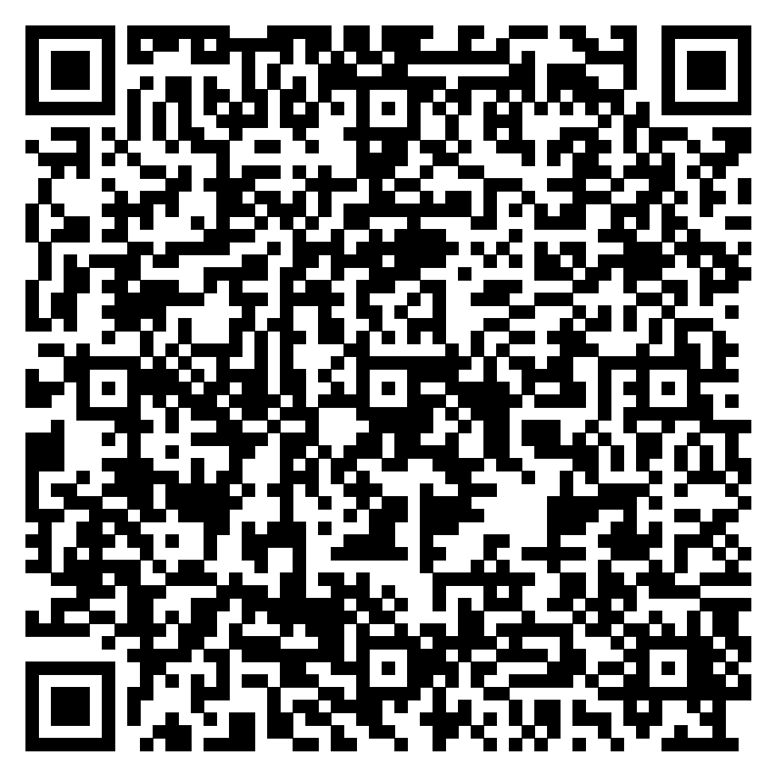
Link para o formulário ESO (Enquete Subjetiva de Opinião):
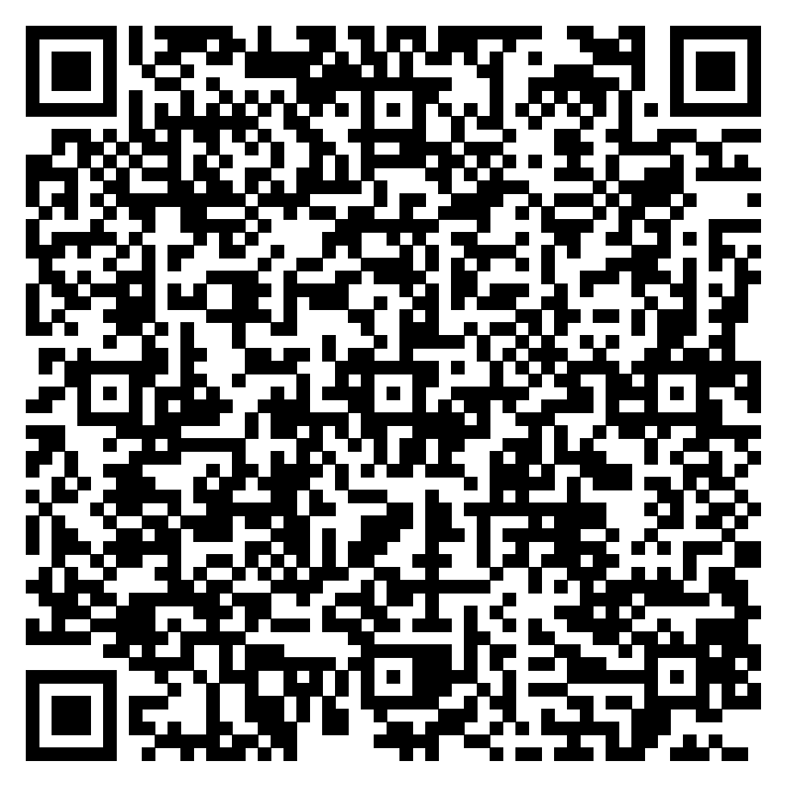
Análise dos Resultados do Teste de Campo TCS
RESULTADOS
O desenvolvimento do sistema resultou em um protótipo funcional em tempo real, capaz de identificar e contabilizar moedas. Durante os testes, o software demonstrou capacidade de detecção das moedas de R$ 0,05, R$ 0,50 e R$ 1,00, mesmo em situações nas quais a luminosidade não era adequada e a superfície apresentava algum tipo de anomalia.Os experimentos realizados em ambientes controlados de laboratório mostraram que o sistema alcança um bom nível de precisão, com identificação correta das moedas e contabilização ao serem inseridas ou retiradas da área de detecção.
A partir dos questionários aplicados junto aos usuários, destacam-se alguns pontos positivos percebidos:
- Praticidade e facilidade de uso: mesmo pessoas sem experiência técnica conseguiram utilizar o sistema sem dificuldades.
- Precisão na contagem: usuários relataram confiança na identificação das moedas, mesmo em condições de iluminação não ideais.
- Aplicabilidade social: o sistema foi considerado útil especialmente para idosos ou pessoas com baixa visão, por reduzir esforço e risco de erros.
- Rapidez: o processo de contabilização é automático e imediato, o que poupa tempo em comparação à contagem manual.
- Inovação: a utilização de técnicas de visão computacional para uma tarefa cotidiana foi considerada um diferencial.
Em termos de limitações observadas, foi relatado que o sistema pode apresentar dificuldades quando as moedas estão muito próximas umas das outras ou em casos de forte reflexão de luz. Ainda assim, os resultados demonstram que o protótipo atendeu ao objetivo inicial do projeto, confirmando sua viabilidade como solução prática para ambientes que demandam manipulação de moedas.
Segue os gráficos com as perguntas e respostas tanto do questionário com relação aos conceitos da disciplina e em relação aos experimentos realizados, quanto o questionário ESO (Enquete Subjetiva de Opinião):
QUESTIONÁRIO
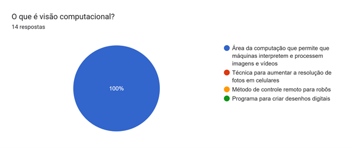
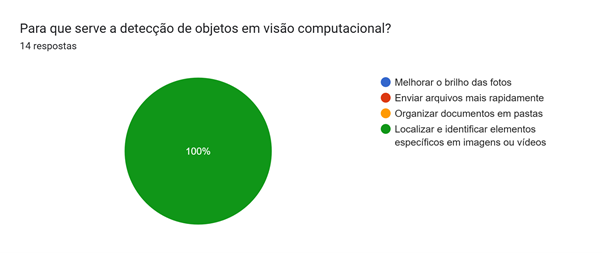
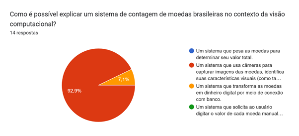
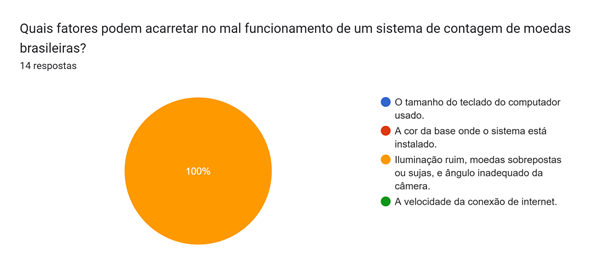
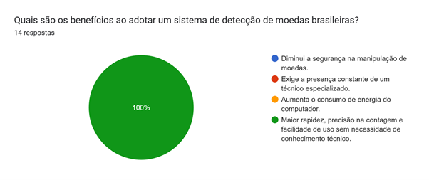
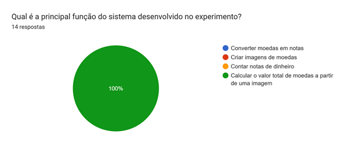
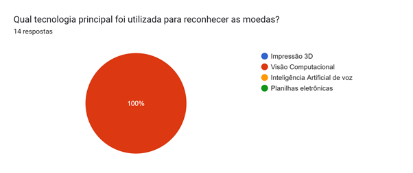
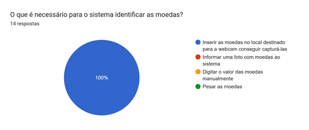
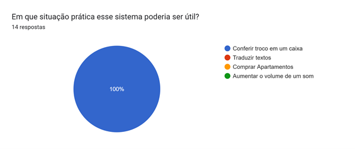
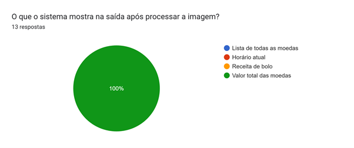
QUESTIONÁRIO ESO (ENQUETE SUBJETIVA DE OPINIÃO)
Nesse questionário foram realizadas perguntas subjetivas e perguntas com escalas de Discordo Totalmente até Concordo Totalmente.
Segue as peguntas subjetivas com as respostas mais importantes:
1. O que você mais gostou no sistema apresentado?
- A contabilização das moedas em tempo real.
- Detecção automática ao retirar/inserir moedas.
- A utilidade e aplicação prática do projeto.
- Da facilidade e precisão que o sistema identifica as moedas mesmo com 'sujeira'.
- Praticidade e facilidade de uso.
2. De que maneira você acredita que este sistema poderia facilitar suas atividades diárias relacionadas à manipulação ou conferência de moedas?
- Em mercados, lojas pequenas e outros comércios seria muito benéfico.
- Pode auxiliar pessoas com mais idade que possuem dificuldade para contar moedas.
- Rapidez, precisão na contagem e redução de erros.
- Facilitaria a vida de pessoas idosas ou com problemas de visão.
- Ajudar a calcular o troco em compras do dia a dia.
3. Quais dificuldades ou problemas você encontrou durante o uso do sistema?
- Dificuldade com a iluminação alterando o valor das moedas.
- O programa demora para atualizar a imagem devido ao alto processamento.
- Se as moedas estiverem coladas, a identificação pode falhar.
- Reflexos da luz podem impedir a detecção em alguns casos.
- Moedas muito próximas apresentam dificuldade na identificação.
4. Que sugestões você daria para melhorar o sistema e torná-lo mais útil?
- Incluir reconhecimento de cédulas além das moedas.
- Adicionar contador lateral com a quantidade de moedas de cada valor.
- Melhorar a eficiência do código ou usar hardware mais rápido.
- Aumentar a portabilidade do sistema (ex.: rodar em dispositivos móveis).
- Possibilitar salvar valores anteriores para somas em sequência.
Segue os gráficos com os feedback quantitativos de acordo com a escala estipulada.
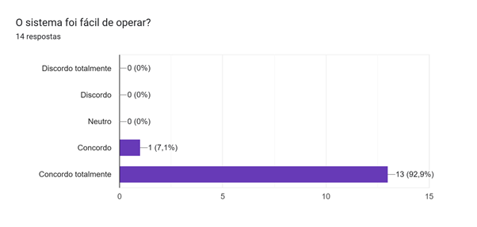
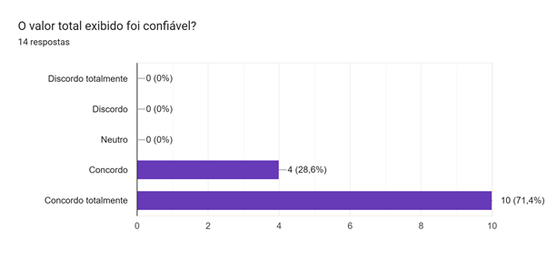
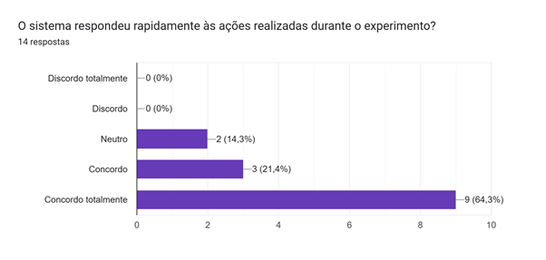
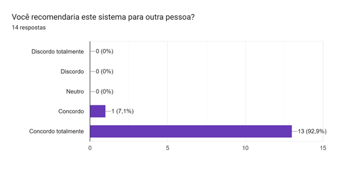
DEMONSTRAÇÃO PRÁTICA
Vídeos gravados no Teste de Campo do SPV (TC), durante a etapa de apresentação do sistema para avaliadores:
CONCLSUÕES
O desenvolvimento do Sistema de Contagem de Moedas Brasileiras com Visão Computacional demonstrou, com sucesso, a viabilidade técnica e a relevância da proposta. O projeto atingiu seus principais objetivos ao criar uma aplicação prática, simples e funcional, capaz de identificar, contar e somar, em tempo real, os valores das moedas de R$ 0,05, R$ 0,50 e R$ 1,00, utilizando apenas uma webcam e um computador. A estratégia modular, combinando ferramentas como OpenCV e TensorFlow com um parâmetro de confiança mínimo de 65%, garantiu um desempenho robusto e um elevado nível de precisão, evitando falsos positivos.
Um dos principais trunfos do projeto, validado por avaliadores, é sua interface acessível e intuitiva. Ao eliminar a necessidade de interação textual ou numérica, o sistema se provou uma ferramenta de grande valor para usuários com baixa alfabetização digital, idosos ou com visão reduzida, promovendo maior autonomia, rapidez e precisão em tarefas cotidianas como a conferência de pagamentos. Dessa forma, o trabalho não apenas resolve um problema prático, mas também serve como um nítido exemplo do potencial da visão computacional para a inclusão digital e social.
Apesar do sucesso alcançado, o projeto estabelece uma base sólida para diversas explorações futuras e
aprimoramentos. As sugestões, coletadas tanto em entrevistas quanto em testes com usuários, indicam
caminhos relevantes para a evolução do sistema. Entre as principais melhorias a realizar,
destacam-se:
Expansão da funcionalidade: Adicionar o reconhecimento das moedas de Real Brasileiro
restantes e, posteriormente, de cédulas brasileiras, além da possibilidade de adaptar o modelo para
moedas de outros países;
Melhoria da robustez e precisão: Aprimorar o treinamento do modelo com um conjunto de dados
com maior diversidade, incluindo moedas oxidadas e desgastadas, e aplicar técnicas avançadas de
pré-processamento de imagem, como o HoughCircles, para otimizar a detecção;
Aprimoramento da experiência do usuário: Implementar um contador por denominação, um
histórico de contagens para últimas somas (com direito à soma dessas etapas), e a calibração
automática da câmera para lidar com diferentes distâncias;
Acessibilidade aprimorada: Introduzir um feedback sonoro, como um alerta para moedas não
reconhecidas, para aumentar a acessibilidade;
Otimização de desempenho: Melhorar a eficiência do código e sugerir o uso de hardware mais
potente para acelerar o processamento das imagens.
Em resumo, o projeto não só comprova a eficácia da abordagem escolhida, mas também abre um vasto leque de oportunidades para otimizações e expansões futuras. A base consistente criada permite que o sistema continue a ser desenvolvido, aprimorando robustez, ampliando funcionalidades e reforçando seu papel como uma ferramenta inclusiva e transformadora.
REFERÊNCIAS BIBLIOGRÁFICAS
- LEARN OPENCV. Read, Write and Display a Video using OpenCV (C++/Python). Disponível em: https://learnopencv.com/read-write-and-display-a-video-using-opencv-cpp-python/ . Acesso em: 25 jun. 2025.
- OPENCV. cv.waitKey — HighGUI module reference. Disponível em: https://docs.opencv.org/4.x/d7/dfc/group__highgui.html#ga5870d8a0eacb8fbd30b5b3eab805f658 . Acesso em: 25 jun. 2025.
- OPENCV. cv.imwrite — Image Codecs Save Functions. Disponível em: https://docs.opencv.org/4.x/d8/d6a/group__imgcodecs__save.html#ga61f7f9b02c5d92b7370d87725a28eab0 . Acesso em: 25 jun. 2025.
- OPENCV. Tutorial: Display video (Python). Disponível em: https://docs.opencv.org/4.x/dd/d43/tutorial_py_video_display.html . Acesso em: 25 jun. 2025.
- LearnOpenCV. (2021). Geometry of Image Formation. Disponível em: https://learnopencv.com/geometry-of-image-formation/ . Acesso em: 01 jul. 2025.
- LearnOpenCV. (2020). Camera Calibration using OpenCV. Disponível em: https://learnopencv.com/camera-calibration-using-opencv/ . Acesso em: 01 jul. 2025.
- OpenCV Documentation. Camera Calibration. Disponível em: https://docs.opencv.org/4.x/dc/dbb/tutorial_py_calibration.html . Acesso em: 01 jul. 2025.
- Matthew Stanciu. Teachable Machine. Disponível em: https://workshops.hackclub.com/teachable_machine . Acesso em: 05 jul. 2025.
- Keras. The Sequential model. Disponível em: https://keras.io/guides/sequential_model . Acesso em: 07 jul. 2025.
- Keras. Save, serialize, and export models. Disponível em: https://keras.io/guides/serialization_and_saving . Acesso em: 08 jul. 2025.
ANEXOS
Solução completa de reconhecimento de moedas: Arquivo compactado
Para usar, siga as recomendações de Procedimento Experimental contidas em: ETAPA 05